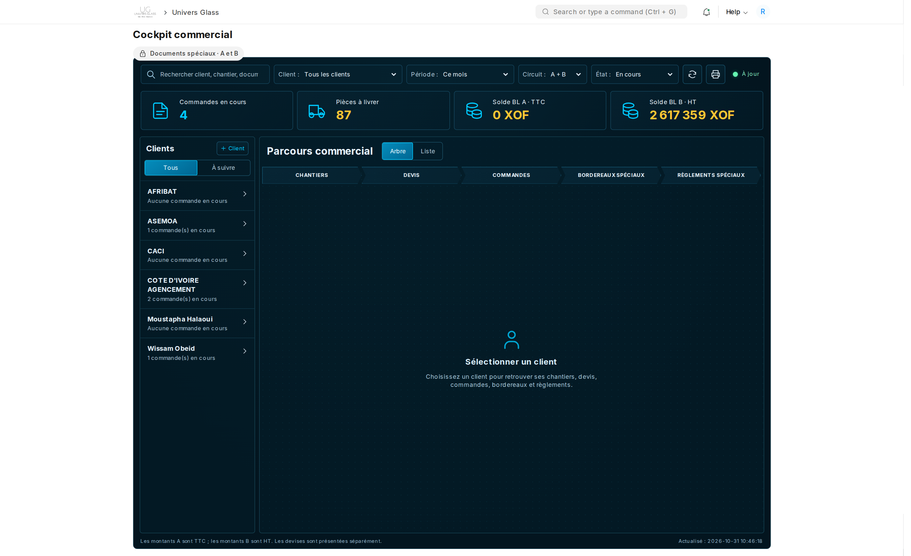
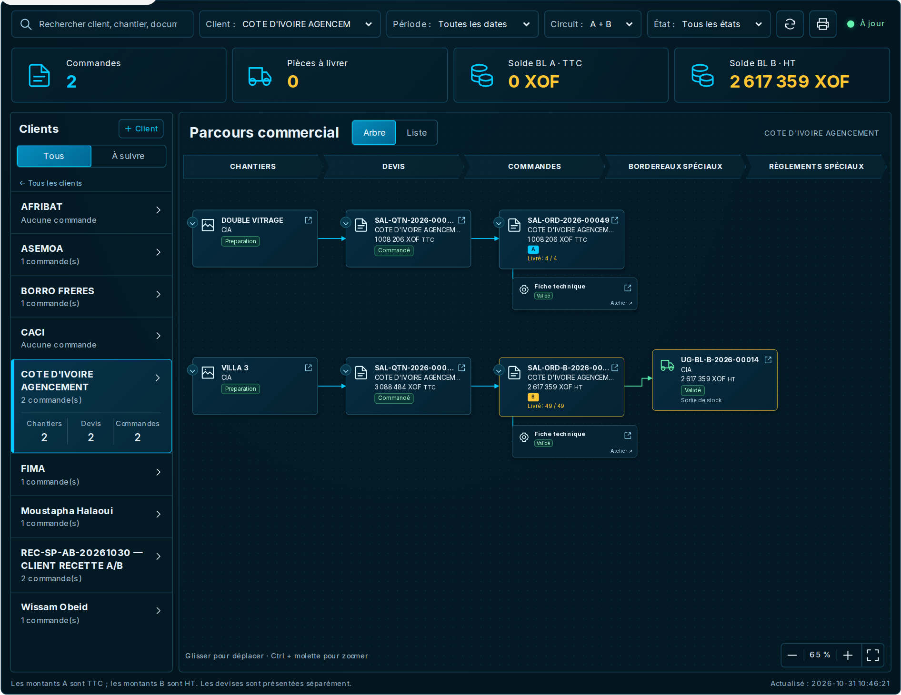
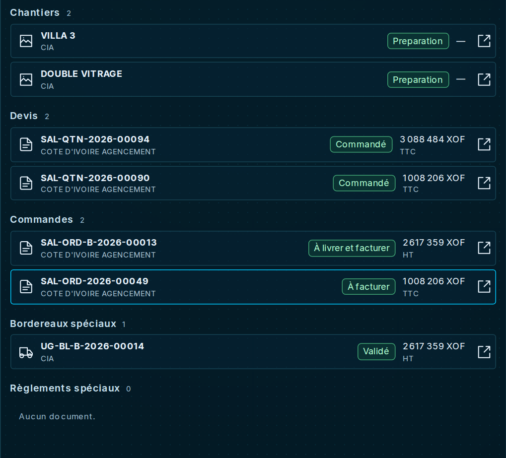
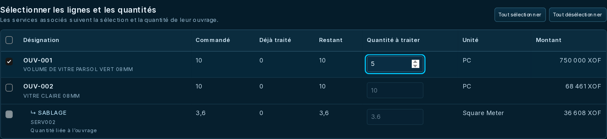
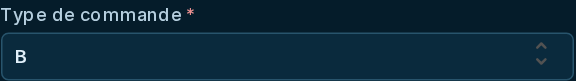
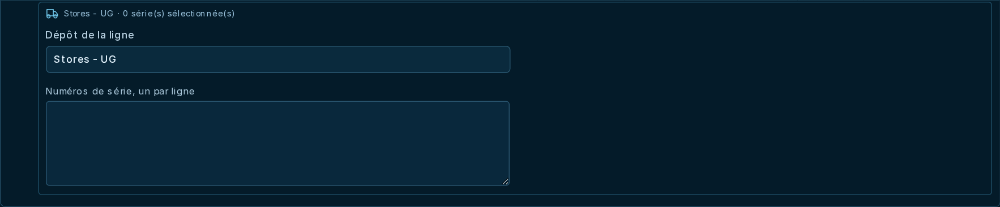
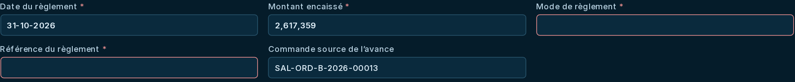
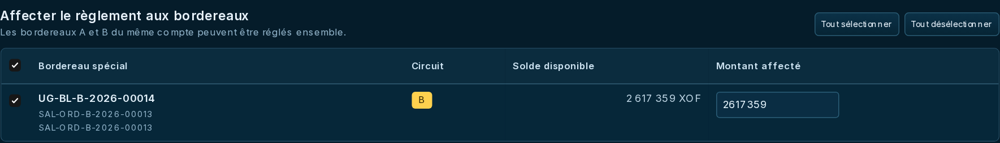
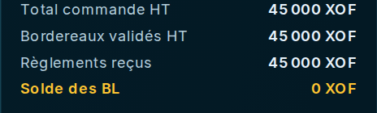
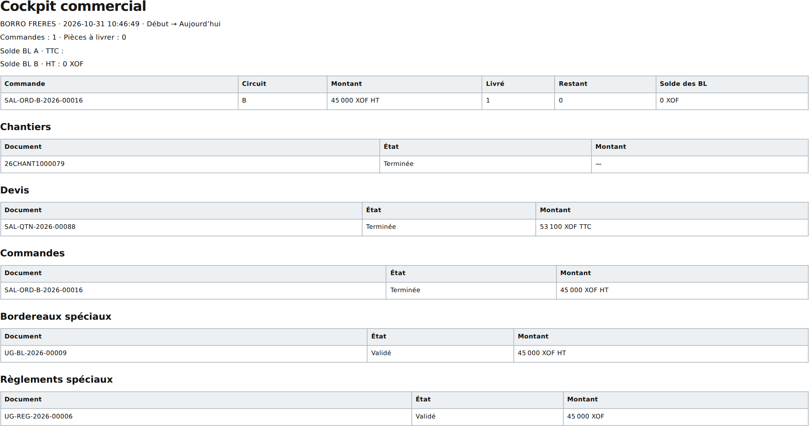

Le cockpit
commercial
Du chantier validé au règlement : traiter les dossiers clients, une étape et une livraison à la fois.

Pour les responsables habilités à utiliser les Bordereaux Spéciaux et Règlements Spéciaux, sur les circuits A et B.
24 captures prises dans l’application en production. Les exemples de préparation n’ont créé ni validé aucun document, mouvement de stock ou encaissement.
Ouvrir le cockpit commercial
Le cockpit rassemble les dossiers par client et permet de préparer les documents suivants sans quitter systématiquement l’écran. Chaque enregistrement ou validation porte sur un véritable document métier.
- Ouvrir Univers Glass → Cockpit commercial, ou https://fimaci.f.frappe.cloud/app/commercial-cockpit.
- Choisir un client dans le volet de gauche.
- Lire son parcours au centre, puis sélectionner une carte pour afficher ses détails et les actions disponibles à droite.
| Zone | Rôle |
|---|---|
| Gauche | Retrouver et sélectionner le client. |
| Centre | Suivre les liens entre chantier, devis, commande et documents associés. |
| Droite | Consulter les montants, quantités, tâches et actions du document choisi. |
Retrouver le bon dossier
- Choisir la période du dossier. Pour un ancien chantier, élargir la période avant de conclure qu’il manque.
- Utiliser Circuit pour choisir A, B ou les deux ; vérifier aussi la société et la devise lorsqu’elles sont proposées.
- Choisir En cours pour le travail restant, ou Tous les états pour retrouver les dossiers terminés.
- Sélectionner le client, puis utiliser la recherche pour cibler un numéro ou un libellé.
| Choix | Résultat |
|---|---|
| Tous | Parcourir les clients et les dossiers correspondant aux filtres. À utiliser aussi pour les dossiers au stade chantier ou devis. |
| À suivre | Cibler les clients ayant des quantités restant à livrer ou un solde de bordereaux non nul. |
| En cours | Concentrer l’affichage sur le travail restant. Un dossier B soldé en HT peut disparaître même si des taxes figurent sur la commande. |
| Tous les états | Consulter également l’historique des dossiers terminés. |
Lire le parcours et les documents liés

- Cliquer sur une carte pour la sélectionner ; lire son numéro, son état et ses indicateurs à droite.
- Suivre les liens entre les documents pour comprendre l’origine du dossier.
- Passer en Liste pour parcourir les documents sous forme tabulaire. Revenir en Arbre pour les relations.
- Utiliser le zoom, le déplacement et le repli des branches pour travailler sur un dossier dense.
- Pour consulter le document complet, utiliser son lien d’ouverture. Les tâches associées sont accessibles dans la partie À faire.

Préparer un devis, en totalité ou en partie
- Sélectionner le chantier validé, puis l’action de préparation du devis.
- Dans la fenêtre, vérifier les lignes proposées et les quantités restantes.
- Cocher les lignes à traiter. Réduire la quantité à reprendre si seule une partie du besoin doit être devisée.
- Contrôler les services et accessoires associés ainsi que les montants. Pour le devis, les prestations liées suivent les lignes parentes sélectionnées.
- Choisir Enregistrer le brouillon pour poursuivre la préparation, ou Valider si le dossier est prêt et que vos droits le permettent.


Préparer la commande et choisir A ou B
- Sélectionner le devis validé accepté par le client, puis préparer la commande.
- Choisir les lignes et quantités à commander ; vérifier les prestations et dates proposées.
- Sélectionner le type de commande A ou B avant le premier enregistrement.
- Enregistrer un brouillon ou valider la commande selon l’avancement du dossier.
- Après validation, suivre la préparation technique des articles à fabriquer, puis leur disponibilité pour livraison.

| Circuit | Conséquences commerciales |
|---|---|
| A | Numéro SAL-ORD-année-numéro. Le bordereau validé déclenche le bon de livraison et la facture ERPNext ; suivi financier en TTC. |
| B | Numéro SAL-ORD-B-année-numéro, avec incrémentation propre. Sortie de stock spéciale et suivi en HT, sans facturation client ERPNext. |

Préparer une livraison partielle
- Sélectionner la commande validée, puis l’action de livraison.
- Cocher uniquement les lignes à livrer maintenant. Vérifier les quantités commandées, déjà livrées et restantes.
- Renseigner la quantité de cette livraison pour chaque ligne sélectionnée. Vérifier séparément les services et accessoires à inclure.
- Contrôler la date, le dépôt et les séries nécessaires. Le dépôt proposé pour les vitres est Stores - UG.
- Enregistrer le bordereau en brouillon, ou le valider après contrôle. Répéter plus tard pour livrer le reliquat.


Enregistrer ou valider un bordereau
| Action | Effet |
|---|---|
| Enregistrer le brouillon | Conserver une préparation pour la relire et la compléter. La livraison n’est pas encore validée. |
| Modifier | Reprendre un brouillon depuis son panneau de détail, si l’action est autorisée. |
| Valider | Exécuter les contrôles et les opérations liées au bordereau. Les quantités livrées sont alors mises à jour. |
- Relire client, commande, date, dépôt, lignes, séries et montants.
- Valider une seule fois, puis attendre le résultat.
- Vérifier le nouvel état, les documents liés et les quantités restantes dans le cockpit.
- En cas d’erreur, lire le message puis actualiser avant de recommencer. Si un document existe déjà, le reprendre au lieu de le recréer.
Voir un bordereau brouillon et ses actions dans le panneau de droite.

Enregistrer un règlement et ses affectations
- Sélectionner la commande ou le bordereau validé concerné, puis préparer le règlement.
- Vérifier le client, la société et la devise. Renseigner la date, le montant effectivement reçu, le mode et la référence de règlement.
- Cocher les bordereaux à régler et saisir le montant à affecter à chacun.
- Contrôler le total affecté et le montant non affecté, puis enregistrer ou valider.
- Après validation, vérifier le règlement et les nouveaux soldes dans le dossier.


Gérer une avance et l’affecter ensuite
Un montant reçu avant livraison peut être conservé comme avance non affectée. Il n’est pas nécessaire de créer un faux bordereau pour l’enregistrer.
- Depuis la commande, préparer le règlement et saisir le montant réellement reçu.
- Sans BL admissible, laisser les affectations vides. Contrôler le montant non affecté, puis enregistrer ou valider.
- Quand le bordereau est validé, retrouver le règlement existant dans le dossier.
- Choisir Affecter le règlement, puis répartir le montant disponible sur les BL concernés.
- Enregistrer l’affectation sans créer un second encaissement.
Voir la préparation d’une avance. · Voir la fenêtre de réaffectation.


Comprendre les montants et les soldes

| Indicateur | Lecture |
|---|---|
| Total commande | Montant commercial de la commande : TTC en A, HT en B. |
| BL validés | Montant des livraisons validées ; une commande partiellement livrée n’a pas encore tout son montant en BL. |
| Règlements affectés | Montants attribués aux BL du dossier. Une avance non affectée ne solde pas un BL. |
| Solde BL | Montant des BL validés moins les règlements qui leur sont affectés. Ce n’est pas forcément le montant restant à livrer. |
| Pièces restant à livrer | Suivi des quantités ; à contrôler séparément du solde financier. |
Les rapports Suivi commandes et Situation des comptes clients permettent de filtrer A, B ou les deux. Ne pas additionner des devises différentes. Un tiret peut signaler une information non accessible ; ce n’est pas un zéro.
Consulter les tâches et imprimer
- Sélectionner un document pour lire ses liens et la zone À faire du panneau de droite.
- Ouvrir le document lié ou la tâche utile pour poursuivre le dossier. La disponibilité dépend des droits du compte.
- Cliquer sur l’icône Imprimer le récapitulatif pour imprimer la vue récapitulative du cockpit.
- Pour un devis ou un bon de livraison officiel, ouvrir le document concerné et sélectionner son format d’impression habituel.

Une tâche de préparation technique concerne les articles à fabriquer. Pour une vente directe, poursuivre le circuit commercial sans attendre une fiche technique inutile.
Contrôles quotidiens et résolution des blocages
| Situation | Vérification à effectuer |
|---|---|
| Chantier absent | Il doit être validé. Contrôler période, client, société et droits ; le brouillon se prépare hors du cockpit. |
| Dossier terminé introuvable | Passer de En cours à Tous les états, puis élargir la période. |
| Commande impossible à créer | Sélectionner le devis validé ; vérifier ses quantités restantes et les messages de préparation. |
| Livraison bloquée | Contrôler reliquat, dépôt, fabrication, séries disponibles et réservations. Ne pas remplacer arbitrairement les séries. |
| Référence de règlement déjà utilisée | Rechercher le règlement du client avant toute nouvelle saisie. Une même somme reçue ne doit pas être enregistrée deux fois. |
| Solde inattendu | Vérifier A/TTC ou B/HT, BL validés, affectations et avances non affectées. Comparer avec le rapport de compte client. |
| Le dossier a changé | Fermer la préparation, actualiser et la rouvrir pour reprendre les quantités disponibles. |
| Accès refusé / action absente | Faire vérifier les droits du compte et le workflow. Les modules spéciaux sont réservés aux utilisateurs habilités. |
Avant de quitter le cockpit
- Vérifier les brouillons laissés en attente et les tâches à transmettre.
- Contrôler les livraisons effectuées et le reliquat à préparer.
- Rapprocher les règlements reçus, leurs références et leurs affectations.
- Relire le solde client dans la bonne société, la bonne devise et la bonne période.